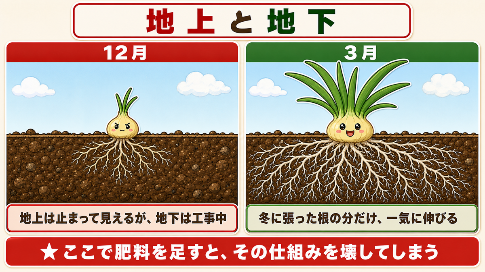
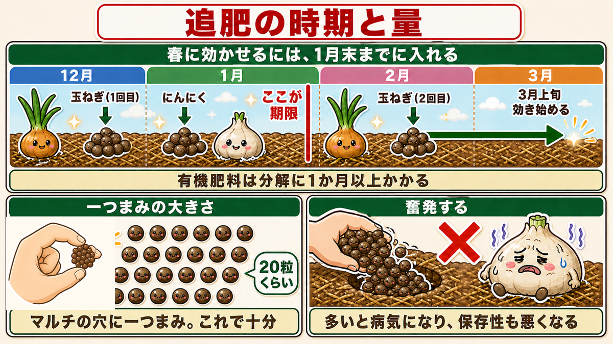
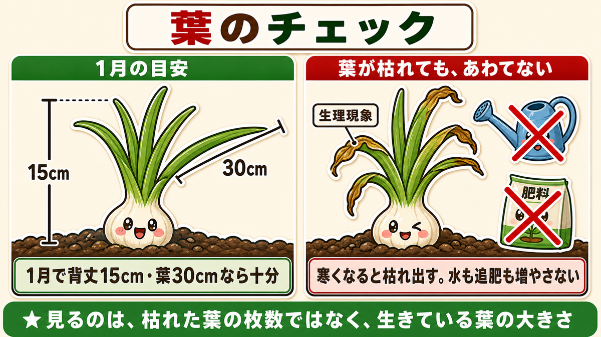
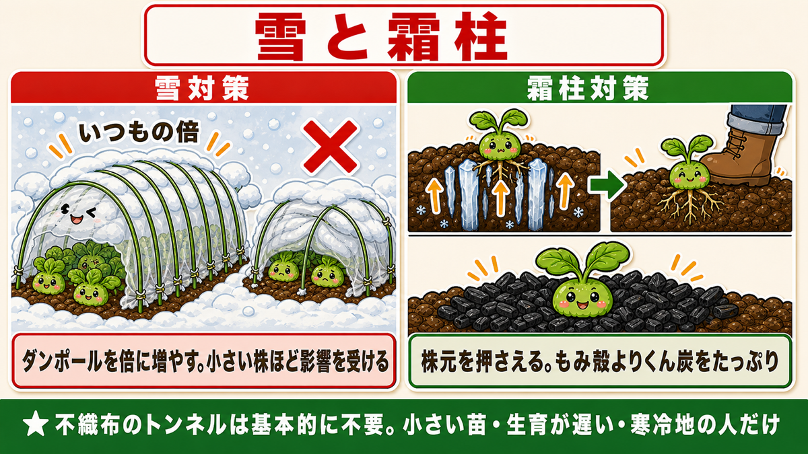
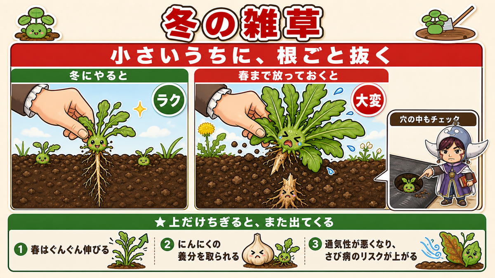
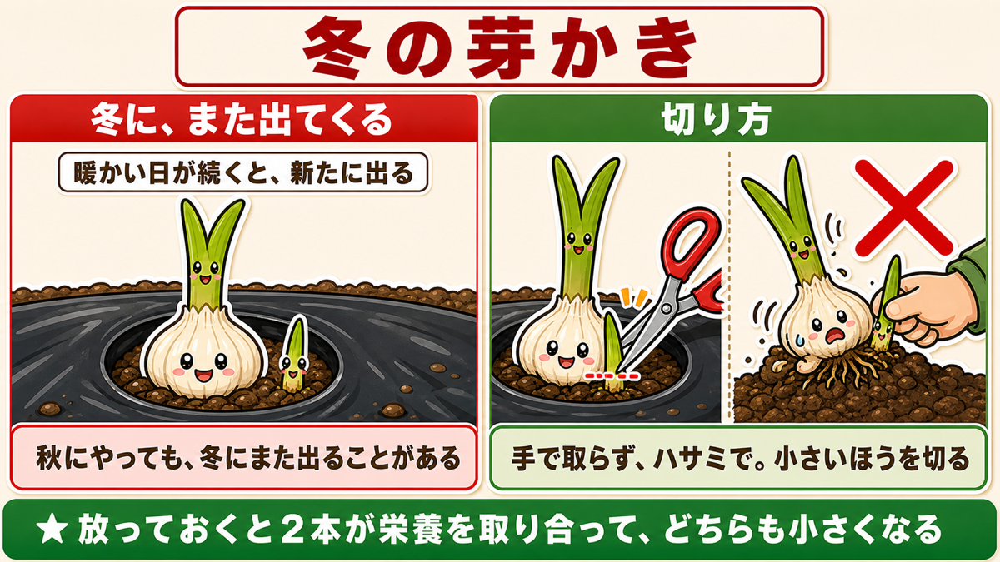
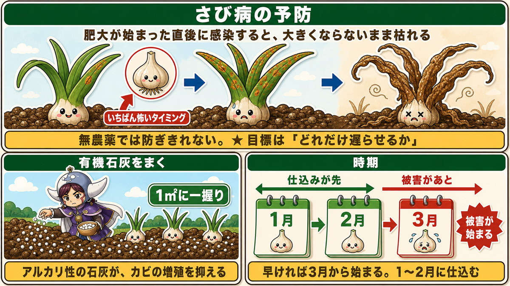
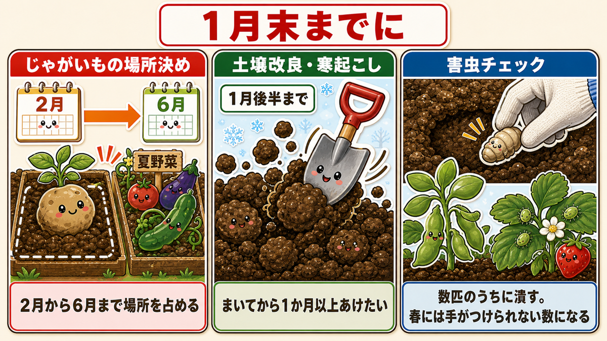

小さくても、肥料を足さないでください🧅 冬の玉ねぎは根を張っています

🗨️「12月の玉ねぎが小さすぎる。このままで大丈夫？」
🗨️「心配だから、追肥を多めにしておこうかな」
🗨️「にんにくの葉が枯れてきた。病気？」
どうも、8150（えいこう）です🌱 家庭菜園歴8年、理科の教員免許を持っていて、有機・無農薬で野菜を育てています。
今回は、すでに植えてある玉ねぎとにんにくを、冬のあいだどう扱うかという話です。
先に、この記事でいちばん言いたいことを言っておきますね。
小さくても、肥料を足さないでください。
12月の畑に立つと、必ず不安になります。11月に植えた玉ねぎが、ちっとも大きくなっていない。にんにくの葉は先から枯れてきている。
でも、それでいいんです。
★地上部は止まって見えても、地下では根が広がっています。
春に一気に伸びられるかどうかは、冬にどれだけ根を張れたかで決まります。そしてここで肥料を足すと、その仕組みを壊してしまう。
今日はその話をします☺️
📖 この記事の目次
★育てる①：冬は「工事中」だと思ってください

まず、いま何が起きているかを知ってください。
玉ねぎとにんにくは、冬のあいだ地上部をほとんど伸ばしません。エネルギーを根に回しているからです。
★下（根）はしっかり張って、春に備えている。
だから12月に小さいのは、失敗ではなく予定どおりなんですね。
そして★3月上旬、暖かくなると一気に伸び始めます。冬に貯めた分を、そこで放出します。
ここで肥料を足すと、どうなるか
「小さいから栄養が足りないんだ」と思って追肥を増やす。気持ちはよく分かります。私も最初の年にやりました。
でも、これが病気を呼びます。
にんにくの世界には「メタボなにんにく」という言い方があります。栄養が多すぎて、太って、不健康な状態のことです。
★肥料過多だと、病気になりやすくなります。そして★収穫した身の保存性も悪くなります。
せっかく穫れても、すぐ腐る。これは本当にがっかりします。
にんにくの追肥は「補助」です
もうひとつ、知っておいてほしい理屈があります。
★にんにくはこのあと、球の部分に蓄えたエネルギーを使って伸びていきます。
つまり、主なエネルギー源は自分の中にある。追肥はあくまで補助的な役割なんですね。
そこに窒素をたくさん入れると、かえって軟弱になります。
肥料は、引き算ができません
私がいちばん納得した言葉を紹介します。
★「足りないのは足せるけど、多すぎた養分は抜けない」
そのとおりなんです。足りなければ、あとから足せる。でも多すぎたと気づいても、土から取り出す方法はありません。
強いて言えば、何かを植えて吸わせて、その株ごと畑の外に持ち出すくらい。
だから迷ったら少なめに。これが冬の鉄則です。
育てる②：追肥のタイミングと、量

玉ねぎ
★中生・晩生の品種は、12月下旬から1月に1回目。2回目は2月です。
（極早生を作っている方は、もっと早いタイミングになります）
- 鶏ふんが使いやすいです。すぐ効いて、持続もします。ぼかし肥でも構いません
- ★株元の近くを避けて、少し離して軽く一つまみ
- 余裕があれば、上から土をかけておく
にんにく
★1月に追肥します。
ここに大事なポイントがあります。
★1月に入れておくと、徐々に分解されて、3月から4月ごろに効き出します。
つまり、すぐに変化がなくても正常です。「効いていないのかな」と思って追加しないでください。それが肥料過多の入口です。
量の目安を、はっきり書いておきます。
★マルチの穴に、一つまみ。
「一つまみ」は、★3本の指で軽くつまむ程度です。鶏ふんなら、粒の数で20粒くらい。
驚くほど少ないと思われるかもしれません。でもこれで十分です。★奮発して大量に与えると、かえって悪影響が出ます。
★期限は1月末です
これは玉ねぎもにんにくも、春キャベツもブロッコリーも共通です。
★春に向けた追肥は、1月下旬までに完了させてください。
理由は、有機肥料の分解に時間がかかるからです。
野菜が休眠から目覚めるのが3月上旬。そこで効かせたいなら、逆算して1月末には入れておく必要がある。2月に入れると、効き始めるころには春が終わっています。
（化成肥料を使っている方は、2月以降でも間に合います）
★育てる③：見るのは「葉の大きさ」です

不安になったとき、何を見て判断すればいいか。答えは葉です。
にんにくの目安
★1月の時点で、背丈15cmほど。葉だけを測ると30cm近く。
これだけあれば十分です。安心してください。
もし明らかに小さい場合は、★ネットやトンネルで保温してあげてください。冬越しがうまくいかないことがあります。
葉が枯れても、あわてない
12月から1月にかけて、にんにくの葉は先から枯れ始めます。
★これは生理現象です。寒くなると徐々に枯れ出します。問題ありません。
ここで「病気かも」と思って、水をやったり追肥を増やしたりしないでください。
★見るべきなのは、枯れた葉ではなく、株全体の大きさです。
枯れた葉が何枚あるかではなく、生きている葉がどれだけ大きいか。そちらを見てください。
育てる④：雪と霜から守る

雪の対策
年始から2月にかけて、寒波で雪が降ることがあります。
★防虫ネットとダンポールで、雪よけを作ってください。
ここにコツがあります。
★ダンポールの数を、いつもの倍に増やしてください。
雪の重みでトンネルが潰れるからです。元の間隔のあいだに、2本ずつ足す。それだけで潰れにくくなります。
★小さい株ほど、雪の影響を受けます。全部やるのが大変なら、小さい株のうねから優先してください。
霜柱の対策
★12月から2月にかけて、毎日のように強い霜に当たると、霜柱が苗を持ち上げます。
★最悪の場合、完全に浮いて、根が乾いて枯れます。
対策は2つ。
- ★株元を強く押さえる（浮いていたら、その場で押し戻す）
- ★もみ殻くん炭を株元にまく
くん炭をおすすめする理由があります。もみ殻でもいいのですが、★くん炭のほうがミネラルの補給になり、地温を高める効果もあり、害虫のリスクも下げてくれます。
★まきすぎということはないので、たっぷりどうぞ。北風で多少飛びますが、隣の株のほうへ行くだけなので気にしなくて大丈夫です。
不織布のトンネルは、基本的に不要です
これも安心材料としてお伝えしておきます。
ある程度の大きさになっていれば、★根が浮いて枯れることはあまりありません。
不織布のトンネルをしたほうがいいのは、この3つに当てはまる方だけです。
- 小さい苗を植えた
- 生育が遅れている
- 寒い地域に住んでいる
それ以外の方は、そこまでしなくて大丈夫です。
育てる⑤：冬の雑草取りが、春を決めます

地味ですが、効きます。
★冬のうちに、小さい雑草を抜いておいてください。
なぜ冬に抜くのか
理由は3つあります。
- ★3月からは雑草もぐんぐん伸びます。小さいうちに抜くほうが、圧倒的にラク
- ★にんにくは肥料をよく吸う野菜です。雑草に養分を取られたくない
- ★雑草があると通気性が悪くなり、さび病のリスクが上がります
そして、いちばん大事なこと。
★根ごとしっかり抜けば、春に再び伸びるのを防げます。
上だけちぎっても、また出てきます。冬は土がやわらかいので、根ごと抜きやすい時期でもあります。
うねの周りだけでなく、★マルチの穴の中、株のすぐ周りもチェックしてください。ここに小さいのが隠れています。
★育てる⑥：冬に、もう一度芽かきをする

にんにくを育てている方へ。これは見落としがちです。
秋に芽かき（1つの穴から2本出た芽の、弱いほうを切る作業）をしましたよね。それで終わりだと思っていませんか。
★冬に暖かい日が続くと、新たに芽が出てくることがあります。
また、初期の生育が遅かった株は、★遅れて2本目が出てくることもあります。
見つけたら、切ってください
放っておくと、春からの肥大期に悪影響が出ます。2本が栄養を取り合って、どちらも小さくなる。
- ★手で取らず、ハサミで切る（手だと株ごと傷めます）
- ★小さいほうの芽を選んで切る
秋にやった作業と同じです。ただ、「もう終わった」と思い込まずに、冬にもう一度見る。それだけのことです。
私は去年これを見落として、春に「なんで2本出てるんだろう」と気づきました。そのときにはもう手遅れで、その株は小さいままでした。
★育てる⑦：さび病は、1〜2月に仕込んで防ぐ

にんにく最大の敵の話です。
さび病は、カビが原因の病気です。★赤茶色のサビのようなものが葉に出て、やがて全体に広がり、最終的に株が枯れます。
そして、いちばん怖いのがこれです。
★球が大きくなり始めた直後に感染すると、大きくならないまま枯れます。
半年育てて、あと少しというところで終わる。これは本当に悔しいです。
無農薬では、防ぎきれません
正直に書きます。★農薬を使わないと、かなりの確率でかかります。
だから目標は「ゼロにする」ではなく、★「どれだけ遅らせるか」です。
肥大が終わるまで持ちこたえられれば、収穫できます。
やり方
★有機石灰をまいてください。
理屈はこうです。★さび病の原因はカビ。アルカリ性の石灰をまくと、そのカビの増殖を抑えられます。
- ★時期は1月から2月
- ★1平方メートルのうねに、一握りをまんべんなく
なぜこの時期かというと、★早ければ3月から被害が始まるからです。始まってからでは遅い。
冬のうちに仕込んでおく。これが無農薬でにんにくを作るコツだと思っています。
ついでに、1月末までにやっておきたいこと

玉ねぎとにんにく以外にも、期限のある作業があります。まとめて済ませてください。
- ★じゃがいもの場所を決める … 種芋は2月販売。じゃがいもは2月から6月まで場所を占めるので、夏野菜と重ならないように
- ★土壌改良と寒起こしを終える … 1月後半まで。まいてから1か月以上あけたいため
- ★害虫チェック … 土の中のさなぎを掘り起こして撃退。★そら豆といちごのアブラムシは、春に大繁殖する前に潰す
最後のこれ、冬に数匹しかいなくても、春には手がつけられない数になります。数匹のうちに潰すのが、いちばん効率のいい防除です。
学ぶ：なぜ、窒素が多いと病気になるのか🔬
理科の時間です。この記事の全部が、ここにつながります。
肥料をやりすぎると病気になる。よく言われますが、なぜでしょうか。
細胞が水っぽくなるからです
窒素は、植物の体を作る材料です。だから多いと、よく育ちます。
でも、育ち方に特徴があります。★窒素が多いと、細胞が大きく、水っぽく育ちます。
急いで大きくなった細胞は、壁が薄くてやわらかい。
そして、★やわらかい組織は、菌にとって入りやすいんです。
人間でいえば、食べすぎて体が重くて、風邪をひきやすい状態でしょうか。栄養があること自体は悪くないけれど、多すぎると守りが弱くなる。
だから「大きい＝いい」ではありません
にんにくの世界には、こういう言葉があります。
★大きくなりすぎたにんにくは、腐りやすい。
品評会に出すなら別ですが、家庭で食べるなら、しっかり締まった中くらいのものがいちばんです。長く保存できて、味も濃い。
冬の追肥は「3月に効かせる」ために入れる
もうひとつ、時間の話です。
有機肥料は、土の中の微生物が分解してはじめて、野菜が吸える形になります。この分解に1か月以上かかります。
つまり★1月に入れた肥料が効き始めるのは、3月ごろ。
これ、よくできているんです。ちょうど野菜が目覚めて、一気に伸び始めるタイミングと重なります。
「今すぐ効かせるために入れる」のではなく、「2か月後に効かせるために入れる」。逆算の作業なんですね。
だから1月末が期限になる。理由がつながりました。
お子さんと一緒なら
これがいちばん分かりやすい観察です。
★1月と3月に、1株だけ掘って根を見てください。
地上部の葉は、ほとんど変わっていません。でも根の量は、まったく違います。
「何もしていないように見えて、下ではこんなに働いていた」
冬の畑が、急に面白くなりますよ🧅
まとめ
ここまで読んでくださって、ありがとうございます！
冬の玉ねぎとにんにくは、我慢の季節です。ポイントを整理しておきますね。
- ★小さくても肥料を足さない。地上は止まって見えても、地下では根が張っている。3月に一気に伸びる
- ★「足りないのは足せるが、多すぎた養分は抜けない」。迷ったら少なめに
- 追肥は玉ねぎ12月下旬〜1月、にんにく1月。★量はマルチの穴に一つまみ（鶏ふん20粒くらい）
- ★期限は1月末。有機肥料は分解に1か月以上かかるので、3月に効かせるには1月に入れる
- 見るのは葉の大きさ。★にんにくは1月で背丈15cm・葉30cmなら十分。葉が枯れるのは生理現象
- 雪はダンポールを倍に。霜柱は株元を押さえて★もみ殻くん炭をたっぷり
- ★冬にもう一度芽かきをする。★さび病は1〜2月に有機石灰を1平方メートルに一握り
全部やろうとしなくて大丈夫です。今日は畑に行って、玉ねぎの葉の長さだけ測ってきてください。そして、何も足さずに帰ってくる。それがいちばん効く一日です🧅
炭化鶏ふん
追肥はマルチの穴に一つまみ。3本の指で軽くつまむ程度、粒の数で20粒くらいです。粒状なので、この「少しだけ」がやりやすいのがありがたいところ。玉ねぎは12月下旬〜1月、にんにくは1月に。
![[商品価格に関しましては、リンクが作成された時点と現時点で情報が変更されている場合がございます。]](https://hbb.afl.rakuten.co.jp/hgb/55e7612a.7de1526b.55e7612b.01a50904/?me_id=1214866&item_id=10002182&pc=https%3A%2F%2Fthumbnail.image.rakuten.co.jp%2F%400_mall%2Fkaju%2Fcabinet%2F00714580%2F03462454%2F07486601%2Fimgrc0071643813.jpg%3F_ex%3D240x240&s=240x240&t=picttext "[商品価格に関しましては、リンクが作成された時点と現時点で情報が変更されている場合がございます。]")

もみ殻くん炭
霜柱で苗が浮くのを防ぎます。ミネラルの補給になり、地温を高め、害虫のリスクも下げてくれる。冬にいちばん働く資材だと思っています。まきすぎということはありません。
![[商品価格に関しましては、リンクが作成された時点と現時点で情報が変更されている場合がございます。]](https://hbb.afl.rakuten.co.jp/hgb/56bc30bc.01c5b89d.56bc30bd.ee310357/?me_id=1231595&item_id=10000412&pc=https%3A%2F%2Fthumbnail.image.rakuten.co.jp%2F%400_mall%2Fplanto-iwa%2Fcabinet%2F2707.jpg%3F_ex%3D240x240&s=240x240&t=picttext "[商品価格に関しましては、リンクが作成された時点と現時点で情報が変更されている場合がございます。]")
カキ殻石灰（有機石灰）
さび病の予防に使います。アルカリ性の石灰が、原因になるカビの増殖を抑えてくれる。1平方メートルのうねに一握りを、1月から2月のうちにまいておいてください。3月に始まってからでは遅いです。
![[商品価格に関しましては、リンクが作成された時点と現時点で情報が変更されている場合がございます。]](https://hbb.afl.rakuten.co.jp/hgb/56d21b6a.c19127f6.56d21b6b.c5473e84/?me_id=1258048&item_id=10000067&pc=https%3A%2F%2Fthumbnail.image.rakuten.co.jp%2F%400_mall%2Fkaneashop%2Fcabinet%2F12084383%2F12419790%2Fimgrc0108924525.jpg%3F_ex%3D240x240&s=240x240&t=picttext "[商品価格に関しましては、リンクが作成された時点と現時点で情報が変更されている場合がございます。]")
防虫ネット
雪よけに使います。ダンポールをいつもの倍に増やして張ると、雪の重みでも潰れません。小さい株ほど雪の影響を受けるので、そこから優先して。
![[商品価格に関しましては、リンクが作成された時点と現時点で情報が変更されている場合がございます。]](https://hbb.afl.rakuten.co.jp/hgb/56bc205d.0066fedc.56bc205e.af56d163/?me_id=1260467&item_id=10000299&pc=https%3A%2F%2Fthumbnail.image.rakuten.co.jp%2F%400_mall%2Fmarsol-morishita%2Fcabinet%2Fshouhinn%2Fbouchuu%2Fimgrc0090950099.jpg%3F_ex%3D240x240&s=240x240&t=picttext "[商品価格に関しましては、リンクが作成された時点と現時点で情報が変更されている場合がございます。]")
剪定バサミ
冬にもう一度出てきた芽を切るときに使います。手で引き抜くと株ごと傷めるので、必ずハサミで。切れ味の悪いものだと切り口がつぶれて、そこから病気が入ります。
![[商品価格に関しましては、リンクが作成された時点と現時点で情報が変更されている場合がございます。]](https://hbb.afl.rakuten.co.jp/hgb/56d22030.def85fa7.56d22031.b89fde86/?me_id=1250472&item_id=10022339&pc=https%3A%2F%2Fthumbnail.image.rakuten.co.jp%2F%400_mall%2Fplantz%2Fcabinet%2F01%2Ft-13.jpg%3F_ex%3D240x240&s=240x240&t=picttext "[商品価格に関しましては、リンクが作成された時点と現時点で情報が変更されている場合がございます。]")